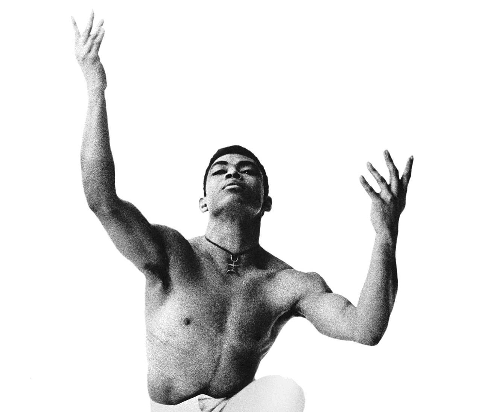
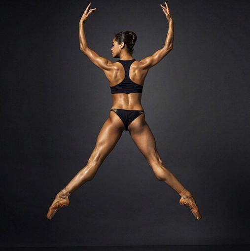

Laura Gunder

Alvin Ailey dancer Normand Maxon
![A photo of a dance performance captures nine dancers all looking at the audience with surprised expressions. Their eyes and mouths are wide open. One dancer is airbound his head is not visible in the frame. The airborne dancer wears white knee socks white underwear a white top and white blazer with pink ribbon. He’s legs are strong and muscular. The dancers in the background wear white and balck the men wear white underwear and the women wear long black blazers. The energy of the photo is playful and silly.](img/NDT2.Rahi-Rezvani_.jpg)
Netherlands Dance Theather 2
![In a photograph of dancers we see one dancer running in a blue dress and red ponytail in the background. The main focus of the photo is of multiply hands and arms covering one dancer. The one dancer also covers their face and mouth. There are no visual depictions of faces in the photo. The hands spread all over the body from the feet to the face. The dancers wear cotton tank tops. The color scheme of the photo is dark greys, blues, greens, and browns. The light captures the muscularity of the dancers.](img/Batsheva.jpg)
Last work performed by Batsheva Dance Company
![Sixteen dancers and four string players stand on a stage. A beam of light cast seven long lines of light across the dancers and musicians. The dancers are kneeling on their own platforms. The back row of dancers have their hands clapping to the left of the photo. The dancers in the front alternate between facing the audience and having their heads down. The dancers appear shirtless and hairless they wear balck pants and balck caps on their heads. The musicians stand in the background in all black. Three play the violin and one plays the cello who is seated.](img/maxres.jpg)
Alexander Ekman's 'Cacti' performed by NDT 2

Photo dancer Misty Copeland photography by Henery Leutwyter
Alvin Ailey dancer Normand Maxon
Netherlands Dance Theather 2
Last work performed by Batsheva Dance Company
Alexander Ekman's 'Cacti' performed by NDT 2
Photo dancer Misty Copeland photography by Henery Leutwyter